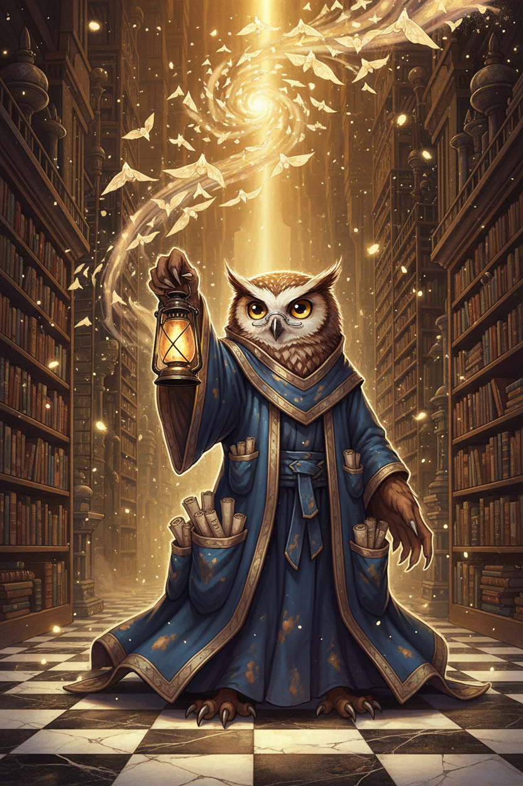
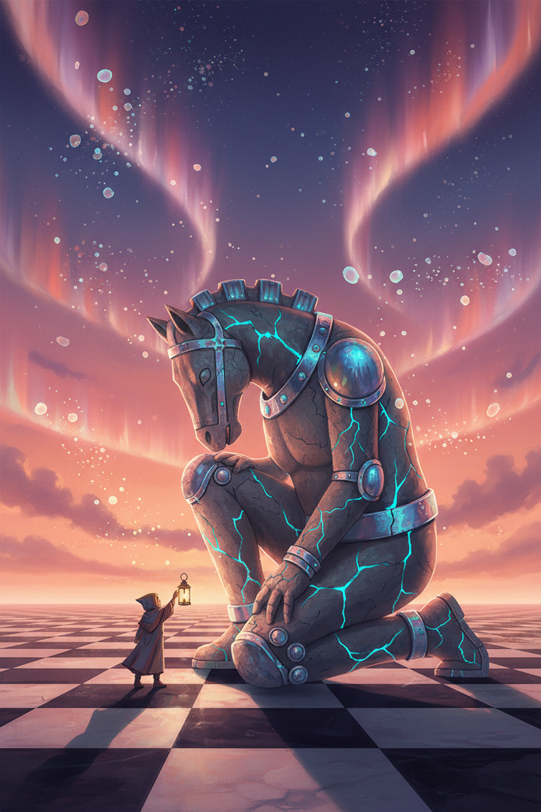

Full-bleed painterly register — deep atmospheric backgrounds, volumetric light, opalescent transitions — with the piece-silhouette rule and faction palettes intact. Compare against characters-sheet.html (flat dialects).
Volt — GlitchwrightsKnight-piece body FINALLY correct: chrome piece + goggles + prismatic afterimages. The piece-silhouette rule survives the lush register.

The Docent — MarginaliaInfinite archive, moth-galaxy spiral up the lantern beam, checkerboard floor.

The Colossus — ErrantryKneeling stone knight, opal shield-bosses, aurora dusk, lantern child. Limbed-but-statue reads as "awakened piece."